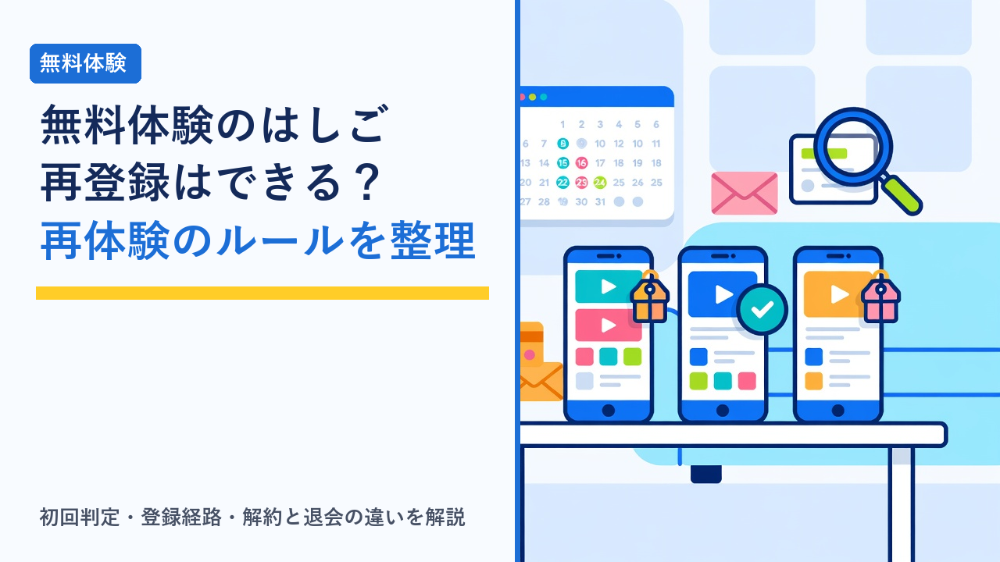

VODの無料体験を「はしご」する前に知っておきたい再登録・再体験のルール
2026-09-12 更新

動画配信サービス（VOD）の多くは、初めて登録する人向けに数週間から1か月程度の無料体験期間を用意しています。この無料期間を複数のサービスで順番に使い、見たい作品を見終えたら次へ移る使い方は、いわゆる「はしご」と呼ばれます。無料体験は本来「自分に合うかを試す」ための仕組みなので、規約の範囲内で順番に試すこと自体は想定された使い方です。ただし、「一度使ったサービスにもう一度登録したら、また無料になるのか」「同じサービスで無料期間を繰り返すのは認められるのか」といった再登録・再体験のルールは意外と知られていません。この記事では、各社に共通する一般的な考え方と、はしごを考える前に確認しておきたいポイントを客観的に整理します。
無料体験の「再体験」は原則できないと考える
ほとんどのVODで、無料体験は「初回登録時のみ」と規約や申し込み画面に明記されています。過去に同じサービスへ登録したことがある人が再登録した場合、無料期間は付かず、登録した時点から月額料金が発生する形になるのが一般的です。まずはこの原則を押さえておくと、再登録のときに「無料だと思っていたのに請求が来た」という食い違いを防げます。
そのうえで、再登録時の扱いはサービスや時期によっていくつかのパターンに分かれます。
① 完全に初回限定
一度でも登録履歴があれば、期間が空いても無料体験は付かないタイプ。最も多い形で、再登録は初月から有料になります。
② 一定期間経過後に再付与
解約から一定の期間が過ぎた人に、再度無料期間や割引を案内するタイプ。期間や条件は公表されていないことも多く、案内が来たときだけ対象になると考えるのが安全です。
③ キャンペーン限定で復帰特典
通常は初回限定でも、期間限定の「復帰キャンペーン」で解約済みの人に割引や無料期間を提供することがあるタイプ。適用条件が細かく決まっています。
④ そもそも無料体験がない
新規登録でも無料期間を設けず、代わりに初月割引やポイント還元で訴求するタイプ。はしごの対象にはなりません。
どのパターンに当たるかは、サービスごとの規約と、そのときのキャンペーン状況で決まります。「以前は無料で試せた」という記憶があっても、条件は変わっている可能性があるため、再登録のたびに申し込み画面で確認するのが基本です。各社の無料期間の有無や長さは動画配信サービスの無料体験まとめ比較で横並びにしています。
「初回」はどうやって判定されるのか
無料体験の対象かどうかは、登録時に入力・連携した情報をもとに判定されます。判定に使われる情報はサービスによって異なりますが、一般的には次のようなものが組み合わされています。
| 判定に使われやすい情報 | どう扱われるか | 知っておきたいこと |
|---|---|---|
| メールアドレス・会員ID | 過去の登録履歴と照合される | アドレスを変えて登録し直す行為は、多くの規約で禁止されている |
| 決済手段（クレジットカード等） | 同じカード番号での再登録は既存利用者として扱われることがある | 家族が同じカードを使うと「初回」と見なされない場合がある |
| 電話番号・SMS認証 | 本人確認と重複登録の防止に使われる | 番号を変えても他の情報で照合されることがある |
| アプリストアのアカウント | アプリ内課金で登録した場合、ストア側の購読履歴で判定される | 公式サイトとアプリストアで無料期間の扱いが別になることがある |
| 通信キャリア・セット契約のID | キャリア決済やセットプランでは回線契約者単位で判定される | 回線契約を変えない限り、原則として1回限り |
上の表は一般的な仕組みを整理したものです。実際にどの情報で判定されるかはサービスごとに異なり、公開されていない場合もあります。無料体験の適用条件は各公式サイトの利用規約と申し込み画面でご確認ください。
ここで重要なのは、判定を回避する目的で情報を変えて登録し直すことは、規約違反に当たるという点です。多くのサービスの規約には、無料体験を複数回受けるために複数のアカウントを作成することを禁じる条項があり、発覚した場合はアカウントの停止や、無料期間分の料金請求といった対応が定められています。はしごを考えるなら「1サービスにつき1回」を前提に、まだ試していないサービスを順番に使うのが安全な範囲です。
登録経路によって条件が変わる
同じサービスでも、どこから申し込むかによって無料期間の有無や長さ、解約の手順が変わることがあります。はしごで見落としやすいのがこの点です。
| 登録経路 | 無料体験の傾向 | 再登録・解約で注意すること |
|---|---|---|
| 公式サイトから直接 | 公式が案内する標準の無料期間が適用されやすい | 解約はマイページで行う。「解約」と「退会（アカウント削除）」が別手続きのことがある |
| スマートフォンのアプリ内課金 | 無料期間が公式サイトと異なる、または付かない場合がある | 解約はアプリストアの購読管理から行う。アプリを消しても課金は止まらない |
| 通信キャリア・セットプラン経由 | キャリア独自の無料期間や割引が付くことがある | 回線側の契約と連動するため、単体での再登録条件が公式と違う |
| 他サービス・提携経由（ポイントサイト等） | 提携先ごとの特典条件が上乗せされる | 特典を受けるための最低利用期間や条件が別に設定されていることがある |
特に注意したいのが、公式サイトとアプリ内課金で「別のアカウント扱い」になるケースです。片方で無料体験を使ったあと、もう片方で登録すれば再体験できると考える人がいますが、これも規約上は同一人物の重複利用に当たる場合が多く、意図的に行うことは避けるべきです。逆に、過去にアプリ内課金で登録していたことを忘れて公式サイトから再登録し、二重に課金されてしまう例もあります。過去の登録経路はアプリストアの購読履歴とメールの受信履歴で確認できます。
はしごで起きやすいトラブルと「解約」「退会」の違い
再登録の問題と並んで多いのが、解約したつもりが解約できていなかった、というトラブルです。仕組みとして押さえておきたいのは次の点です。
- 「解約」と「退会」は別の手続きのことがある：解約は有料プランを止めること、退会はアカウント自体を削除することです。退会だけして課金が続く、あるいは解約せず退会ができない設計のサービスもあります。
- 退会するとポイント・視聴履歴・お気に入りが消える：解約のみならアカウントが残るため再開が簡単ですが、退会するとためたポイントや履歴が失われるのが一般的です。将来また使う可能性があるなら、解約にとどめる選択肢もあります。
- 解約してもアカウントの登録履歴は残る：退会（削除）しても、無料体験の判定に使う履歴は一定期間保持される場合があります。退会すれば初回扱いに戻るわけではありません。
- 無料期間の数え方がサービスで違う：「登録日から〇日間」と「登録月の末日まで」では終了日が大きく変わります。同時に複数登録すると管理が難しくなるため、1つを解約してから次に登録するほうが安全です。
- 解約直後に見られなくなるかは設計次第：期間終了まで視聴できるサービスと、解約した時点で見られなくなるサービスがあります。前者なら解約手続きを早めに済ませておけます。
解約日の管理方法や、手続きが完了したかの確認手順はVODサービスの解約忘れを防ぐコツと注意点まとめで詳しく整理しています。
はしごより長期契約が向いているケース
無料体験を順番に試すのは比較の手段として有効ですが、すべての人に合うわけではありません。次のような場合は、1つに絞って継続するほうが結果的に満足度も費用面でも有利になりやすいといえます。
- 見たい作品が特定のサービスの独占配信に集中している：オリジナル作品や独占配信は、はしごしても他社では見られません。作品ラインナップの傾向はアニメ好きにおすすめのVODサービスはどれ？作品ラインナップの傾向比較などで確認できます。
- 家族で使っていて同時視聴やプロフィールを活用している：解約・再登録のたびに視聴履歴やプロフィール設定が失われると、家族分の再設定が負担になります。詳しくは動画配信サービスの家族アカウント・同時視聴ルールまとめをご覧ください。
- 月額に付くポイントやレンタル特典を使っている：ポイント付与型のサービスは、継続してためるほど新作レンタルに使いやすくなります。仕組みは映画好き向けVODの選び方：新作レンタルと見放題の違い・ポイント付与の仕組み比較で整理しています。
- 年払いやセット割引の対象になっている：長期契約前提の割引を使うなら、短期で出入りするより固定したほうが実質負担は下がります。
選び方のポイント
- 「まだ使ったことのないサービス」だけをはしごの対象にする：同じサービスの再体験は原則できないと考え、過去の登録歴をメールとアプリストアの購読履歴で先に確認します。
- 登録前に「初回のみ」「無料期間の日数」「終了日の数え方」の3点を申し込み画面で確認する：決済を確定する前の画面に表示されるのが一般的です。表示がなければ無料期間は付かないものとして判断します。
- 同時登録は避け、1つ解約してから次に進む：終了日が重なると管理ミスが起きやすくなります。順番に使えば、それぞれの無料期間をフルに使えます。
- 解約は「解約」で止め、アカウントは残す：退会まで行うとポイントや履歴が消えるうえ、無料体験の判定が初期化されるわけでもありません。再開の可能性があるなら解約のみにとどめます。
- 登録経路は公式サイトを基本にする：無料期間や解約手順が標準的で、あとから条件を確認しやすいためです。アプリ内課金やキャリア経由は特典が付くこともありますが、解約先が変わる点を理解したうえで選びます。
- 判定を回避する目的の登録はしない：別アドレス・別カードでの再登録は規約違反に当たることが多く、利用停止や料金請求のリスクがあります。はしごは規約の範囲内で行うのが前提です。
よくある質問
一度解約したサービスの無料体験を、もう一度使うことはできますか？
多くのサービスでは無料体験は「初回登録時のみ」と定められており、過去に登録したことのあるアカウントや決済情報で再登録すると、無料期間なしで初月から課金される形になるのが一般的です。一方で、解約から一定期間が経過した人を対象に再度無料期間やキャンペーンを案内するサービスもあります。可否と条件はサービスごとに違い、時期によっても変わるため、再登録の申し込み画面で「無料期間」の表示があるか、または「初回のみ」の注記があるかを、決済を確定する前に確認するのが確実です。
別のメールアドレスで登録し直せば、無料体験をもう一度使えますか？
おすすめできません。多くのサービスの利用規約では、無料体験を複数回受けるために複数のアカウントを作ることを禁止しており、発覚した場合はアカウントの停止や利用制限、無料期間の取り消しと料金の請求といった対応が定められていることがあります。また「初回」の判定にはメールアドレスだけでなく、決済手段や電話番号、アプリストアのアカウントなどが使われる場合があるため、アドレスを変えても無料期間が適用されないこともあります。無料体験は各サービスの規約の範囲内で、1人1回を前提に利用するのが安全です。
無料体験を複数のサービスで順番に使うこと自体は問題ありませんか？
それぞれのサービスで規約に沿って初回の無料体験を利用し、期間内に解約すること自体は、一般的に問題のある行為ではありません。無料体験は本来「自分に合うかを試す」ための仕組みであり、複数を順番に試して比較することは想定された使い方といえます。注意したいのは、同じサービスで無料体験を繰り返そうとすることと、複数を同時に登録して解約日を管理しきれなくなることです。順番に試す場合は、1つを解約してから次に登録する、終了日をカレンダーに入れる、といった管理をあわせて行うと無駄な課金を避けやすくなります。